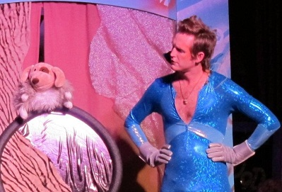
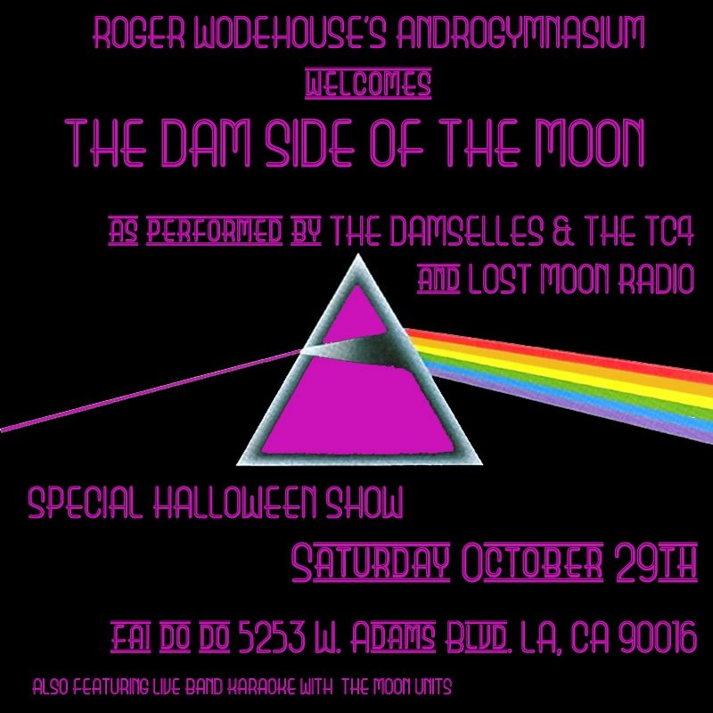

FOR IMMEDIATE RELEASE
Press Contact:
ALL TREATS, NO TRICKS AT
LOST MOON RADIO'S HALLOWEEN BASH
LOS ANGELES, October 22, 2011 - For those seeking a low-stress, high-fun, totally glam holiday, join
LOST MOON RADIO'S HALLOWEEN BASH on October 29th at Café-Club Fais Do-Do. Featuring entertainment from LOST MOON RADIO plus musical performances and a costume contest, the night is a sure-fire bet for a truly unique All Hallows Eve.
First up is a swinging set from LA's hottest doo-wop throwback group, THE DAMSELLES & THE TC4. At 9PM, witness the final performance of LOST MOON RADIO's latest hit production Roger Wodehouse’s Androgymnasium, which answers the eternal question: what happens when a 70s glam rock icon gets his own BBC children’s show? It’s an hour of original sketches and songs, all developed by the group recently named “Best of Comedy" at the 2011 Hollywood Fringe Festival.
After a trip to the Androgymnasium, the fun continues as the Damselles take the stage again to regale the crowd with their interpretation of Pink Floyd's legendary album, Dark Side of the Moon. This musical mash-up, aptly known as the
“Dam Side of the Moon” promises to be the only place to hear a Motown cover of “Money." For those not done shaking their tail feathers, rounding out the evening is a set of almost-world-famous Live Band Karaoke with LOST MOON RADIO'S incomparable house band, The Moon Units, affording audience members the chance to take the stage and belt out tunes themselves.
On top of stellar performances from some of Los Angeles's most unique music and comedy groups, LOST MOON RADIO will host a costume contest for guests, with prizes including t-shirts, tickets to future shows, and more. The bar will be in on the fun with spooky specials, and the dancing will go late into the night.
“Roger Wodehouse’s Androgymnasium” features Ryan Harrison, Jen Burton, Dan Mahoney, Dan Oster, and Frank Smith. Musical accompaniment by The Moon Units. Written by Frank Smith and Ryan Harrison, with music by Dylan Ris, Rich Ramberg, Michael Wells, Ryan Harrison, and Frank Smith. Directed by Lauren Ludwig. Produced by Monica Miklas. The Damselles are Maria DeLuca, Jillinda Palmer, and Brittney Westover and the TC4 are Sean Johnson (drums), Adam Kurtz (guitar), Mustang Lang (keys), and Jake Maltinsky (bass). The Damselles & The TC4 exude a style that fuses 1960’s girl-groups (The Ronettes, The Cookies, The Shangri-Las), with the energy of R&B performers (Tina Turner, Leslie Gore, Dusty Springfield), adding hints of Soul & Motown (Martha & The Vandellas, The Supremes), all the while creating a sound that is current and unique.
# # # MORE # # #
WHAT: Lost Moon Radio's Halloween Bash with special guests The Damselles & the TC4
WHERE: Café-Club Fais Do-Do. 5253 W. Adams Blvd, Los Angeles, CA 90016.
WHEN: Music begins at 8:15pm. “Roger Wodehouse's Androgymnasium” will begin at 9pm.
ADMISSION: $17 online, $20 at the door. All shows are 18+. Costumes encouraged!
RESERVATIONS: Tickets on sale now. For tickets and more information visit www.lostmoonradio.com.
For more information and press comps please contact:
Lauren Ludwig
# # # END # # #